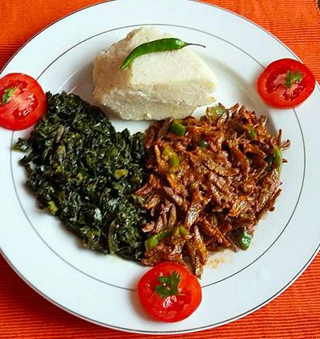

Home Page
How to prepare Omena!

Description
Boil the omena, dry it on the sun for some hours, deep fry it then add the
other ingredients
Ingredients Used
- Two onions
- Three tomatoes
- Tomato paste
- Turmeric
- One royco cube
- cooking oil
Steps
-
Cut the onions and cooking oil on the sufuria, turn them until they turn
golden brown
- Add the tomatoes, Turmeric, royco cube, tomato paste
- Add the omena with some water
- serve with ugali when ready
Home Page